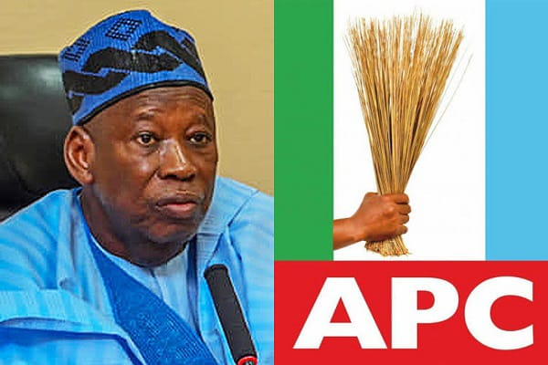

WE ARE READY TO DE-MARGINALIZE IGBOS —APC NATIONAL CHAIRMAN.
Posted on July 15, 2024 by Admin

The National Chairman of the All Progressives Congress (APC), Alhaji Abdulahi Ganduje, has said the party has initiated moves to de-marginalise Igbos to place them in the limelight of national politics.
Ganduje asserted on Sunday during the APC South East zonal meeting in Abakaliki, noting that Igbos had shown massive support to the party and the President Bola Tinubu-led administration presently.
The APC national chairman said that though a line must be drawn between marginalisation and low performance of the southeast in the APC, the party had decided to break the vicious cycle of marginalisation
“The present appointments offered the zone by President Bola Tinubu’s administration is heartwarming and with more involvement in the party’s affairs, more would be achieved. “We must break this cycle of marginalisation with determination, unity and total support to the party and President Bola Tinubu-led administration" he said.
He noted that Ebonyi had followed Imo’s trail in massively promoting the party’s activities and thanked Gov. Francis Nwifuru for sustaining the party’s ideals in the state.
Read More
Nigeria's Economy on the Rise
Posted on July 4, 2024 by Admin
Nigeria's economy is experiencing significant growth as the country diversifies its industries. The recent increase in tech startups and agricultural exports has contributed to the positive outlook. Experts believe this trend will continue as the government implements more business-friendly policies.
Read More
Lagos State Introduces New Traffic Regulations
Posted on July 3, 2024 by Admin
The Lagos State Government has introduced new traffic regulations aimed at reducing congestion in the metropolis. These regulations include new traffic light systems and increased fines for traffic violations. The government hopes these measures will improve the flow of traffic and reduce accidents.
Read More
Advancements in Nigerian Healthcare
Posted on July 2, 2024 by Admin
With the opening of new hospitals and the introduction of advanced medical technologies, Nigeria's healthcare sector is undergoing a transformation. The government has partnered with private organizations to provide better healthcare services to citizens, especially in rural areas.
Read More
Nigeria's Education Sector Receives Funding Boost
In a significant development for Nigeria's education sector, the federal government has announced a major funding initiative aimed at improving educational facilities and resources across the country.
The initiative, part of the government's commitment to revitalizing the education sector, will allocate billions of naira to refurbish schools, provide modern equipment, and enhance teacher training programs.
Minister of Education, Dr. Amina Mohammed, highlighted the importance of this funding in addressing infrastructure deficits and ensuring Nigerian students receive quality education comparable to global standards.
This funding comes amidst ongoing efforts to reform the education curriculum and promote digital literacy in Nigerian schools, preparing students for future challenges in a rapidly evolving global economy.
Read More